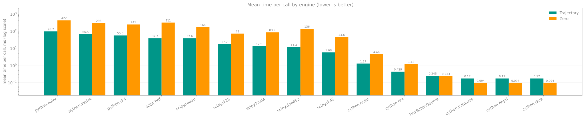
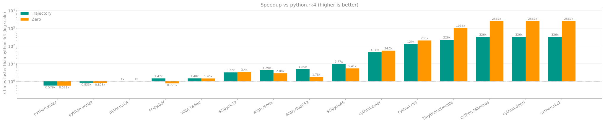

Engines¶
Summary¶
py-ballisticcalc provides various calculation engines with identical public semantics. The relative merits of the engines are detailed in benchmarks.
Mean time¶

Speedup vs python.rk4¶

| Engine Name | Speed (Find Zero / Trajectory) | Dependencies | Description |
|---|---|---|---|
python+rk4 |
Baseline (1x) | None; default | Runge-Kutta 4th-order integration |
python+euler |
0.6x / 0.6x (slower) | None | Euler 1st-order integration |
python+verlet |
0.8x / 0.8x (slower) | None | Verlet 2nd-order symplectic integration |
cython+rk4 |
205x / 129x (faster) | [exts] |
Compiled Runge-Kutta 4th-order |
cython+euler |
54x / 44x (faster) | [exts] |
Compiled Euler integration |
cython+verlet |
130x / 99x (faster) | [exts] |
Compiled Verlet 2nd-order symplectic |
cython+rkck[^adaptive] |
2567x / 326x (faster) | [exts] |
Compiled Cash-Karp adaptive RK45 |
cython+dopri[^adaptive] |
2567x / 326x (faster) | [exts] |
Dormand--Prince 5(4), SciPy RK45-style controller |
cython+tsitouras[^adaptive] |
2567x / 326x (faster) | [exts] |
Tsitouras 5(4), SciPy RK45-style controller |
scipy+rk23 |
3.4x / 3.2x (faster) | [scipy] |
SciPy solve_ivp RK23 — Bogacki–Shampine 3(2), lowest order: cheap steps, loose accuracy |
scipy+rk45 |
5.4x / 9.8x (faster) | [scipy] |
SciPy solve_ivp RK45 — Dormand–Prince 5(4), SciPy default: general-purpose |
scipy+dop853 |
1.8x / 4.8x (faster) | [scipy] |
SciPy solve_ivp DOP853 — Dormand–Prince 8(5,3), high order: for tight tolerances |
scipy+radau |
1.5x / 1.5x (faster) | [scipy] |
SciPy solve_ivp Radau — implicit Radau IIA 5th-order, for stiff problems |
scipy+bdf |
0.8x / 1.5x (mixed) | [scipy] |
SciPy solve_ivp BDF — implicit variable-order (1–5) multistep, for stiff problems |
scipy+lsoda |
2.9x / 4.3x (faster) | [scipy] |
SciPy solve_ivp LSODA — Adams/BDF (ODEPACK), switches automatically between non-stiff and stiff |
All scipy+… engines call SciPy's solve_ivp and differ only in the integration method (SciPyIntegrationEngineFactory(method)).
scipy+bdf is slower than python+rk4 on Zero but faster on Trajectory, hence "mixed".
The current rows (except cython+verlet) were measured with
scripts/benchmark.py on one machine and one revision (see Bench for the per-engine repeats and raw means). The two figures in each
cell are Find Zero / Trajectory, calculated directly from that run's pure-Python
python+rk4 means (241.340 ms / 55.455 ms). Treat them as hardware- and workload-dependent
measurements, not portable constants. The remaining historical rows should be remeasured
before comparing them numerically with this snapshot. Raw Cash-Karp figures are in
benchmarks; Dormand-Prince and Tsitouras figures (measured
directly against each other and cython+rk4, not against pure-Python python+rk4)
are in benchmarks — read that section
before trusting the identical-looking multiplier in cython+tsitouras's row above:
all three adaptive engines measure in the same performance class, not a ranking.
[^adaptive]: Measured directly against pure-Python python+rk4, not composed through
cython+rk4's own row above. See Adaptive integration below
for why Find Zero and Trajectory differ so much for the adaptive engines even when comparing
just the Cython engines directly.
- This project will default to the
python+rk4. - For higher speed and precision use the
scipy+rk45(or anotherscipy+…method, e.g.scipy+dop853). - For maximum speed use the
cython+rk4(or one of the adaptive engines —cython+rkck,cython+dopri,cython+tsitouras— for repeated/zero-finding-heavy workloads; they measure in the same performance class as each other, so pick by compatibility/controller preference, not expected speed — see below).
Engines are addressed as <engine>+<method> (or <engine>.<method>), where <engine> is the backend group
(python, cython, scipy) and <method> the integration method: python+euler, python+rk4, python+verlet,
cython+euler, cython+rk4, cython+verlet, cython+rkck, cython+dopri, cython+tsitouras,
scipy+rk23, scipy+rk45, scipy+dop853, scipy+radau, scipy+bdf, scipy+lsoda.
The old flat names (rk4_engine, cythonized_rk4_engine, scipy_engine, ...) still work but are deprecated
and emit a DeprecationWarning.
To select a specific engine when creating a Calculator, use the optional engine argument:
from py_ballisticcalc import Calculator
calc = Calculator(engine="python+rk4") # same as "python.rk4"
# or via entry-point path
calc = Calculator(engine="my_pkg.my_mod:MyEngine")
Cython Engines¶
Cythonized engines are compiled for maximum performance. Include the [exts] option to install those:
pip install "py-ballisticcalc[exts]"
uv add py-ballisticcalc[exts]
Adaptive integration¶
cython+dopri and cython+tsitouras are two structurally-identical
7-stage FSAL (First-Same-As-Last) Runge-Kutta 5(4) pairs — Dormand-Prince ("DOPRI5", the same
tableau scipy.integrate's RK45 uses) and Tsitouras ("Tsit5"; Tsitouras, 2011, coefficients
verified against ARKODE_TSITOURAS_7_4_5 in SUNDIALS/ARKODE). Both use scalar
relative_tolerance and absolute_tolerance (both default to 1e-6), SciPy RK45 component
scaling, safety 0.9, and factors in [0.2, 10]. Tsitouras has a smaller leading
truncation-error coefficient at each order than Dormand-Prince, but this does not translate into
fewer accepted steps or faster wall-clock time for typical ballistic trajectories — see
benchmarks for the measurement. Pick
between them by compatibility preference (e.g. matching another tool's Tsit5/DOP853 choice),
not expected speed. Cash-Karp intentionally keeps its existing controller for compatibility.
cython+rkck (py_ballisticcalc_exts.CythonizedCashKarpIntegrationEngine) wraps
bclibc's Cash-Karp adaptive RK45 integrator
(Numerical Recipes' rkck, an embedded 4th/5th-order method). Unlike every other engine here,
its internal step size is adaptive rather than fixed only by cStepMultiplier:
cStepMultiplier sets the configured base step, and Cash-Karp grows it up to 64x during smooth
flight or shrinks it down to 1/64 whenever its embedded error estimate
exceeds its SciPy-compatible tolerances, relative_tolerance and scalar
absolute_tolerance (both default 1e-6, configurable per instance). Each of the three
position and three velocity state components is scaled independently as
atol + rtol * max(abs(y), abs(y_new)); their scaled errors are combined with an RMS norm,
matching scipy.integrate.solve_ivp's Runge-Kutta controllers. This needs far fewer
accepted steps than fixed-step RK4 for comparable accuracy.
That step-count reduction alone doesn't explain why set_weapon_zero's speedup (~16x vs.
cython+rk4) is so much larger than a single fire() call's (~2.3x): both compare the
same pair of engines on the same 2000m shot. The difference is where the Python/C++ call
boundary falls. fire() crosses that boundary once per call, but still pays a roughly fixed
per-call cost (unit conversions, building HitResult/TrajectoryData rows) on top of the raw
integration — a cost that's a small fraction of cython+rk4's comparatively slow raw
integration, but a much larger fraction of cython+rkck's (already tiny) raw
integration, so it dilutes CK's apparent advantage. set_weapon_zero, by contrast, crosses that
boundary once for the entire damped-Newton search (confirmed by measurement: 4 iterations for
this shot, each internally calling the integrator with no per-iteration Python round-trip), so
the fixed per-call cost is paid once instead of once per iteration, and the ratio that comes
through is much closer to the engines' raw, undiluted integration speeds. Neither number is
wrong; they answer different questions ("how much faster is a typical Python-facing call" vs.
"how much faster is the raw integration"). See the benchmarks page for the
measurements.
from py_ballisticcalc import Calculator
calc = Calculator(engine="cython+rkck")
# or, to tune the error tolerance:
from py_ballisticcalc_exts import CythonizedCashKarpIntegrationEngine
calc = Calculator(engine=CythonizedCashKarpIntegrationEngine(
{"relative_tolerance": 1e-6, "absolute_tolerance": 1e-6}
))
cython+dopri and cython+tsitouras take the same
relative_tolerance/absolute_tolerance config shape:
from py_ballisticcalc import Calculator
calc = Calculator(engine="cython+tsitouras")
# or:
from py_ballisticcalc_exts import CythonizedTsitourasIntegrationEngine
calc = Calculator(engine=CythonizedTsitourasIntegrationEngine(
{"relative_tolerance": 1e-6, "absolute_tolerance": 1e-6}
))
Two things had to be fixed to make this correct, not just fast — both apply to every engine now, not only Cash-Karp:
- Per-stage recompute, not per-step memoization. Fixed-step RK4 evaluates the drag
coefficient once per step and reuses it across all 4 sub-stages — a fine approximation
because the step is always tiny. An adaptive method cannot do this: Cash-Karp recomputes the
drag coefficient and the atmosphere sample fresh at each of its 6 stages. An earlier
attempt that reused RK4's freeze-once trick produced real, tolerance-independent accuracy
failures, because the embedded error estimator is blind to model error from a stale
drag/atmosphere sample — it only measures discretization error of the frozen sub-problem, so
tightening
relative_tolerancenever helped. - Event/row interpolation had to stop assuming dense, uniform raw samples. The original
per-point interpolation scheme estimated a Hermite slope from the spacing of 3 neighboring
raw integration points (finite-difference PCHIP) — accurate when those points are close
together and evenly spaced (true of RK4's fixed tiny step), but measurably wrong once an
adaptive integrator legitimately takes few, large steps through smooth flight: a multi-unit
miss on a ZERO/MACH/APEX crossing was observed and reproduced. The fix streams each accepted
(start, end)interval to the trajectory filter and reconstructs RANGE/TIME rows and event roots with a 2-point cubic Hermite built from that interval's exact endpoint position and velocity (no finite-difference estimate), solved by bisection where a crossing is sought. Velocity at an interpolated point is the derivative of that same position Hermite, not a separately-interpolated series, so position and velocity stay mutually consistent. A consequence: a scheduled sample and a physical event are no longer merged into one row just because their timestamps happen to land close together — seeHitResultoutput views. This fix applies to every engine'shandle_step/record_steppath, not only Cash-Karp's, sopython+rk4andcython+rk4benefit from the same accuracy improvement even though their fixed, dense step rarely exposed the original bug.
Custom Engines¶
To define a custom engine: Create a separate module with a class that implements the EngineProtocol.
The engine's constructor should implement EngineFactoryProtocol
You can then load it like:
from py_ballisticcalc import Calculator
calc = Calculator(engine="my_library.my_module:MyAwesomeEngine")
Entry Point: You can also register the engine under a named entry point in pyproject.toml/setup.py.
Entry points live in a group named py_ballisticcalc.engines.<engine>, and the entry point name is the <method>:
[project.entry-points."py_ballisticcalc.engines.my_library"]
awesome = "my_library.my_module:MyAwesomeEngine"
Then you can load the engine using <engine>+<method> (or <engine>.<method>):
from py_ballisticcalc import Calculator
calc = Calculator(engine="my_library+awesome")
The entry point value can be any object implementing EngineFactoryProtocol,
e.g. a pre-configured factory such as py_ballisticcalc.engines:SciPyDOP853IntegrationEngine
(built with SciPyIntegrationEngineFactory("DOP853")).
Deprecated
The legacy flat group [project.entry-points.py_ballisticcalc] with names ending in _engine
(e.g. my_awesome_engine) is still resolved, but emits a DeprecationWarning and will be removed.
Test a custom engine
To test a specific engine with the project test suite, run pytest with --engine argument. Examples:
pytest ./tests --engine="my_library+awesome"
# or
pytest ./tests --engine="my_library.my_module:MyAwesomeEngine"